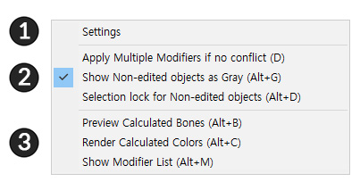
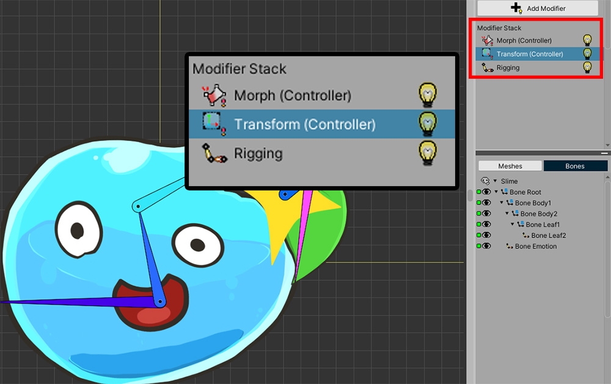
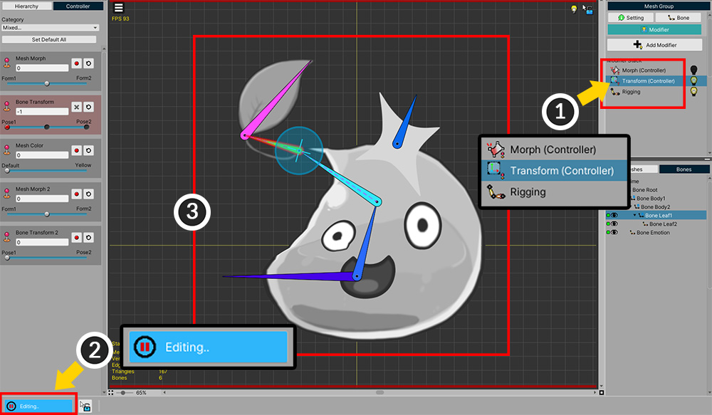
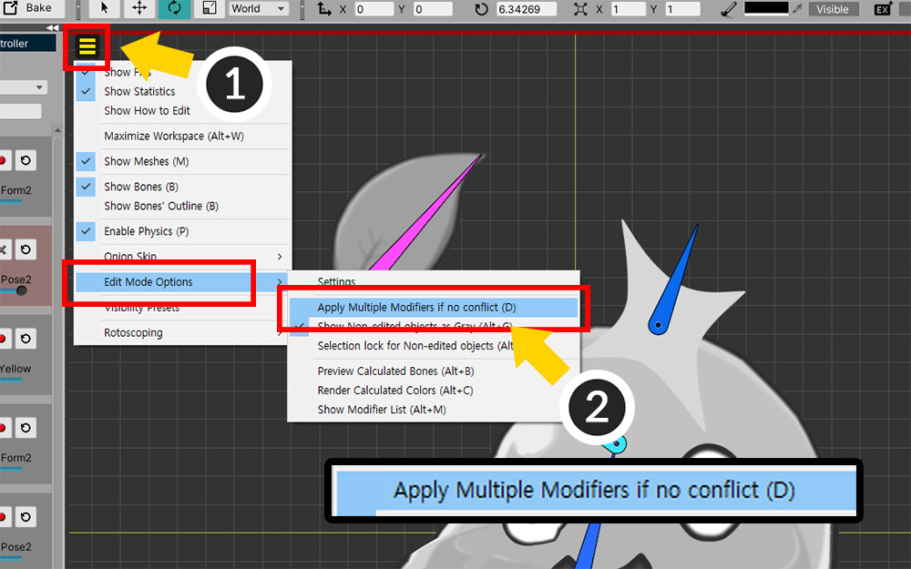
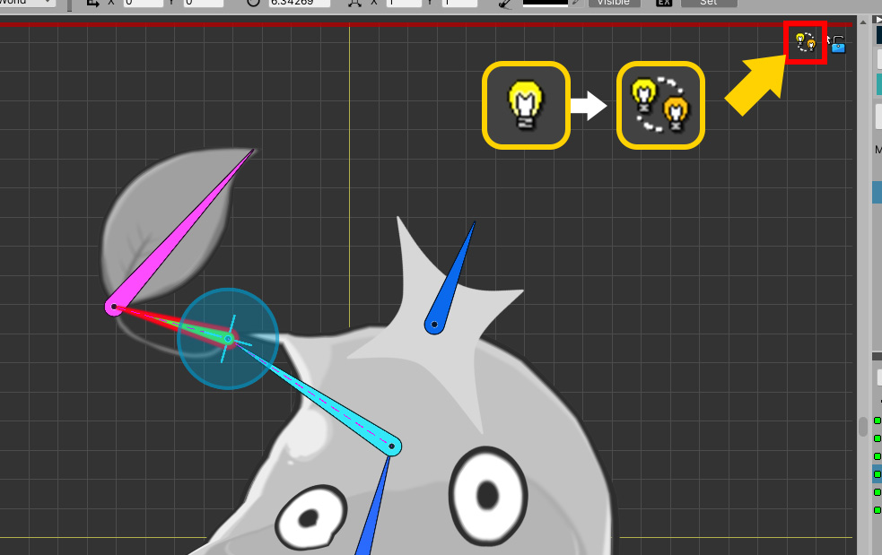

AnyPortrait > マニュアル > 編集モードのオプション
編集モードのオプション
1.3.0
既存の「モディファイヤロック」機能がAnyPortrait v1.3.0で「編集モードのオプション」に改善しました。
モディファイヤやアニメの「編集モード」でモディファイヤがどのように動作するのか、ワークスペース内のオブジェクトがどのように表示されるのかなどを設定することができます。
このページでは、「編集モード」の様々なオプションを一つずつ説明します。
編集モードオプションの設定

「表示メニュー」の「Edit Mode Options」の項目を選択すると、上記のようなメニューが表示されます。

1. Settings : 編集モードオプションの設定を開きます。
2. モディファイヤの動作オプション : モディファイヤがどのように動作するかについてのオプションです。
3. プレビューオプション : ボーンや色の演算結果をプレビューするためのオプションです。

編集モードオプションの設定を開いてみましょう。
(1) 「表示メニュー」を開きます。
(2) 「Edit Mode Options > Settings」を選択します。

編集モードのオプションの設定画面です。
編集モードのオプションと一緒に追加の設定があります。
(1) 「選択ロック(Selection Lock)」が自動的に起動する場合を設定することができます。
(2) 選択されたモディファイヤではなく、他のモディファイヤが動作するように作ら設定します。
(3) モディファイヤに登録されていないオブジェクトを灰色に見えるように作成するか、選択されないように作ら設定します。
(4) 他のモディファイアとの演算結果をプレビューできるように設定することができます。
(5) どのようなモディファイヤが動作することを確認しやすいように「モディファイヤリスト（Modifier List）」を出力する設定です。
(6) 設定を初期化したり、設定ウィンドウを閉じるボタンです。

「モディファイヤリスト」をオンにすると、上記のような情報がワークスペースに表示されます。
編集モードでは、複数のモディファイヤが動作するように設定
AnyPortraitは複数のモディファイヤを自由に追加して、複合的に動作する特徴があります。
この柔軟な方式のシステム特性のために、「編集モード」では、選択したモディファイヤのみ動作する制限が設けられています。
「AnyPortrait v1.3.0」では、これらの制限が設けられ、少し緩和されました。
可能な場合に限り、すなわち、衝突が存在しない場合には、編集対象ではなく、他のモディファイヤが動作することができるオプションが提供されます。
説明のために簡単な例を用意しました。

「Morph」モディファイヤが「メッシュ」を変形させます。

「Transform」モディファイヤが「ボーン」を移動します。
「Rigging」モディファイヤも適用された状態なので、スライムがボーンの動きに応じてのように動きます。

モディファイヤがどのように構成されていること見ることができます。
このモディファイヤは、「制御パラメータ」の入力を受け取ります。

まず、「Transform」モディファイヤを編集しながら、「Morph」モディファイヤが同じように動作するように作られてみましょう。
(1) 「Transform」モディファイヤを選択します。
(2) 「編集モード」をオンにします。
(3) 「制御パラメータ」に基づいて、ボーンを動かすことができます。

(1) 「表示メニュー」を開きます。
(2) 「Edit Mode Options > Apply Multiple Modifiers if no conflict」（ショートカット D ）をオンにします。

「複数のモディファイヤ(Multiple Modifiers)」状態では、ステータスアイコンが上記のように変わります。

編集対象「Transform」モディファイヤではなく、「Morph」モディファイヤに対応する「制御パラメータ」を変更してみましょう。
従来は「Morph」モディファイヤが動作しないため、「制御パラメータ」を変更してもメッシュが変更されません。
しかし、今、「複数のモディファイヤ」状態でメッシュが「Morph」モディファイヤの影響を受けることを上記のように見ることができます。

今回は逆に、「Morph」モディファイヤを編集する状態で、「Transform」モディファイヤが動作するように作られてみましょう。
(1) 「Morph」モディファイヤを選択します。
(2) 「編集モード」をオンにします。
(3) メッシュの頂点を編集することができる状態になりました。

同様に、「マルチモディファイヤ」オプションをオンにすると、TransformモディファイヤとRiggingモディファイヤが動作して骨とメッシュが動くのを見ることができます。

同様に、「複数のモディファイヤ」オプションをオンにすると、「Transform」モディファイヤと「Rigging」モディファイヤが動作してボーンとメッシュが動くのを見ることができます。
複数のモディファイヤが動作する規則は次のとおりです。
- 編集中のモディファイアの他のキー（Key）は動作しません。
- 編集中のオブジェクトには、他のモディファイヤが適用されません。（ただし「Rigging」モディファイヤは、動作します。）
- 編集していないオブジェクトについては、可能なすべてのモディファイヤが動作します。
上記の規則によって、上記サンプルがどのように動作したかは、次のとおりです。
(1) 「Transform」モディファイヤは、「ボーン」だけ制御するので、「メッシュ」に「Morph」モディファイヤが適用されることがありました。
「メッシュ」が「Transform」モディファイヤに登録されていないからです。
(2) 逆に、「Morph」モディファイヤが選択されている場合は、「メッシュ」だけ制御されるので、「ボーン」に「Transform」モディファイヤが適用されます。
ただし、同時に「Rigging」モディファイヤが動作して、まるで「メッシュ」が「Transform」モディファイヤの影響を受けるように見えます。
つまり、この機能は、上記のようにメッシュとボーンが互いに異なるモディファイヤのみ登録されている場合に効果的に動作することができます。
もちろん、上記の規則によると、他の場合にも適用することができます。

前の例では、モディファイヤが異なるオブジェクトを対象とする場合]を説明しました。
逆に、「モディファイヤが同じオブジェクトを対象とする場合」を見てみましょう。
今回は「Morph（Controller）」モディファイヤと「Morph（Animation）」モディファイヤを用意して、共通のメッシュを編集するように作られてみましょう。

上記のように、テスト用のサンプルを構成してみました。
(1) 「制御パラメータ」タイプと「Morph（Animation）」タイプのタイムラインを追加しました。
(2) 「Morph（Animation）」は、唯一の「Emotion」というメッセージのみを制御します。
(3) 上記の「Emotion」メッシュは、「Morph（Controller）」モディファイヤと「Morph（Animation）」モディファイヤの両方に登録された状態です。
(4) その他のメッシュは、ただ「Morph（Controller）」モディファイヤのみ登録されています。

(1) キーフレームで制御パラメータを変更すると、
(2) 「Morph（Controller）」モディファイヤによってスライムが変形されます。

(1) 「Morph（Animation）」タイムラインを選択します。
(2) 「編集モード」をオンにします。
(3) 「Emotion」メッシュを編集できる状態になります。

(1) 「複数のモディファイヤ」（ショートカット D ）オプションをオンにします。
(2) 「Morph（Controller）」モディファイヤを含む他のモディファイヤが有効になって、ほとんどのメッシュに適用がされていることを見ることができます。
(3) ただし、「Emotion」メッシュは、「Morph（Controller）」が適用されません。
前で説明したルールによって、「現在編集中のオブジェクト」には、他のモディファイヤが適用されないからです。

この状態で、「Emotion」メッシュの形を編集してみましょう。

(1) 「編集モード」を終了する必要が (2) 「Emotion」メッシュに「Morph（Animation）」モディファイヤと「Morph（Controller）」モディファイヤが適用されることを見ることができます。
モディファイヤの対象ではないオブジェクトをグレーで出力

(1) 「表示メニュー」を開きます。
(2) 「Edit Mode Options > Show Non-Edited object as Gray」（ショートカット Alt+G ）をオンにします。

このオプションは、モディファイヤで編集されているオブジェクトを除いた残りのオブジェクトをグレーで表示する機能です。
ワークスペースにオブジェクトが、多くの場合、モディファイヤの対象を容易に区別することができて便利です。
モディファイヤの対象ではないオブジェクトの選択ロックを維持

(1) 「表示メニュー」を開きます。
(2) 「Edit Mode Options > Selection lock for Non-edited objects」（ショートカット Alt+D ）をオンにします。

モディファイヤ対象ではないオブジェクトの「選択ロック維持」オプションは、「選択ロック（Selection Lock）」の動作を変更します。
(1) 「編集モード」をオンにします。
(2) 「選択ロック（Selection Lock）」（ショートカット S ）をオフにします。
(3) 「青いロックアイコン」ではなく、「赤と青の色ロックアイコン」が代わりに表示されます。

基本的には「選択ロック」をオフにすると、すべてのオブジェクトを選択することができます。
しかし、このオプションをオンにすると、「モディファイアの対象ではなく、オブジェクト」には、「選択ロック」が常に維持されます。
そのため、「選択ロック」かどうかに関係なく、「モディファイアの対象ではなく、オブジェクト」を選択することができません。
上記のように (1) モディファイヤの対象オブジェクトを自由に選択することができますが、
(2) その他のオブジェクトは、「選択ロック」を切っても選択することができません。
多くのモディファイヤを使用するか、オブジェクトが、多くの場合、「選択ロック」を切った状態で、適切なオブジェクトを選択するのが難しい場合があるときは、このオプションが役立つでしょう。
モディファイヤの結果のプレビュー
「編集モード」で、基本的に1つのモディファイヤだけ動作するので、作業中に他のモディファイヤの演算結果を表示することができません。
しかし、「ボーン」と「メッシュの色」については、「編集モード」の状態でも、すべてのモディファイヤの演算結果をプレビューすることができます。

説明のための簡単な例を用意しました。
(1) 「Morph（Controller）」モディファイヤがメッシュの色を「青」に変更します。
(2) Transform（Controller）」モディファイヤが「ボーン」を動かし、メッシュの色を「緑」に変更します。

説明のための簡単な例を用意しました。
(1) 「Morph（Controller）」モディファイヤがメッシュの色を「青」に変更します。
(2) Transform（Controller）」モディファイヤが「ボーン」を動かし、メッシュの色を「緑」に変更します。

(1) モディファイヤを選択し、「編集モード」をオンにした状態でも、すべてのモディファイヤの色値が適用されたことを見ることができつなぎます。
(2) 「カラープレビュー」アイコンが表示されます。

「ボーンプレビュー」オプションを使用してみましょう。
(1) 「表示メニュー」を開きます。
(2) 「Edit Mode Options > Preview Calculated Bones」（ショートカット Alt+B ）をオンにします。

「Transform（Controller）」モディファイヤではなく、他のモディファイヤを選択した状態で、「編集モード」をオンにします。
ボーンのモディファイヤ演算結果が「黄色アウトライン」の形で示しています。


アウトラインの色を「編集モードオプションの設定」で変更することができます。

「カラープレビュー」と「ボーンプレビュー」がオンの場合、「状態アイコン」で確認することができます。
上記のアイコンは、それぞれ「色のプレビュー」、「ボーンプレビュー」、「色とボーンの両方のプレビュー」である場合に表示されるアイコンです。